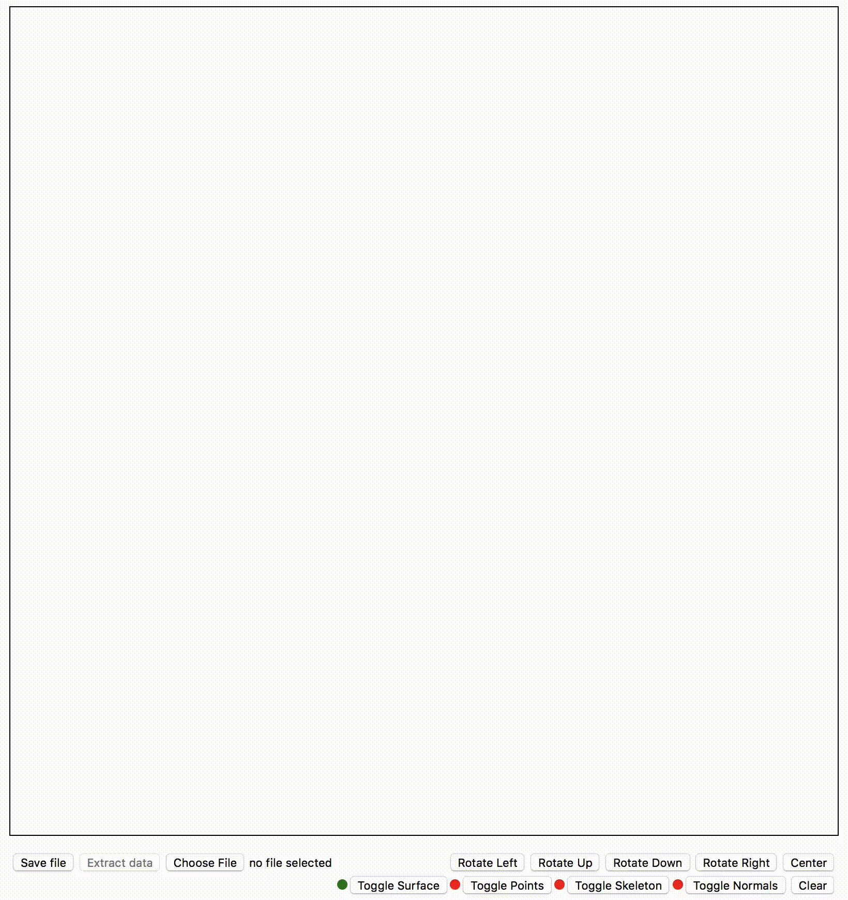

Description
Student Info
- Name: Kevin Romero Peces-Barba
- CruzID: kromero8
- Student ID: 1635745
Clicks and drawing
- The program has an event that detects mouse clicks on the canvas.
- It can check which mouse button was clicked. It only accepts right and left clicks.
- Mouse clicks will draw a point. Theese points will be part of a polyline.
- Left click indicates a non-ending point.
- It can be the first point of a polyline or an intermediate one.
- Right click is used to indicate an ending point. This will be the last point of the current polyline and will draw the cylinder asociated to the line.
- The exception for this is that if a right click is detected with no active polyline/cylinder it will work as the first point of it and won't be ending point.
- The program will draw the lines between every polyline points until the polyline is completed and the cylinder is drawn.
Left Click
Right Click
Line drawing
Mouse movement
- The program will detect the mouse movement around the canvas.
- If there is no active polyline nothing will happen. If there is any active polyline then a rubberband line will be drawn from the last point of the polyline to the current mouse position.
Cylinder drawing
- When a polyline is completed a poly-cylinder will be asoicated to it. This means every point will become a node and between every consecutive pair of nodes a cylinder will be drawn.
- Once a cylinder (or more) has been drawn the 'Save file' button can be pressed and our objects will be saved to a '.obj' file. Also the name of the file will be asked.
- One the file is saved you can still draw more objects.
- Click on 'Choose file' to load a previously sabed '.obj' file containing objects. Then click 'Extract data' to draw them.
- When a file is load the objects are saved in memory. This means that you can draw over the loaded file and continue the drawing.
Saving cylinders
Loading cylinders
Extra features
- Here are some of the extra features aded.
- There's an option to toggle drawing of cylinders' surfaces.
- There's an option to toggle drawing of cylinders' points.
- There's an option to toggle drawing of cylinders' skeleton.
- There's an option to toggle drawing of cylinders' faces normals.
- Four buttons have been added to rotate objects in the viewport. This is done using a rotation matrix around the Y/X axis.
- This feature also contributes to better appreciate the Normal Drawing.
- This rotation can be achieved using the arrow keys too.
- A 'center' button has been added to center the object again (Enter key).
- I've modified the ioSOR library to make it posible to save several objects in one file (and be able to load a file containing more than one object).
- This modified 'mod_ioSOR.js' file is located in the 'lib' folder.
- In the right side of the page theres a list with current objects in canvas.
- There are two options for each object: toggle visibility and remove them.
Surface Triggering
Point Triggering
Skeleton Triggering
Normal Triggering
Cylinder Rotation
Multiple object saving / loading
Object management
Screenshots and demos
Basic demo on drawing
Saving object to file

Loading object from file and continue drawing

Saving multiple objects to file

Rotating the draw

Toggling draws